GO analysis, generated 2026-06-09T14:09:46.584151867-03:00
The project needs focused structural attention. The most important findings should be planned explicitly instead of being handled opportunistically.
This report summarizes structural quality signals from the S202 dependency model. It focuses on size distribution, layering violations, package cycles, class cycles, and component API findings when the component architecture is likely enough to report.
| Metric | Value |
|---|---|
| Source kind | GO |
| Languages | Unknown |
| Build systems | Unknown |
| S202 version | dev |
| Classes | 763 |
| Packages | 57 |
| Modules | 0 |
| Interfaces | 82 |
| Exported packages | 0 |
| S202 component packages | 0 |
| S202 API packages | 0 |
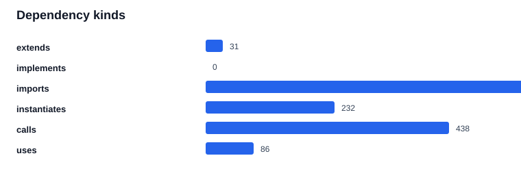
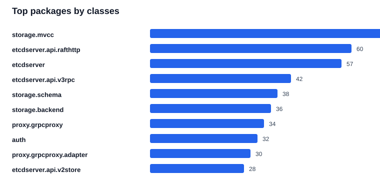
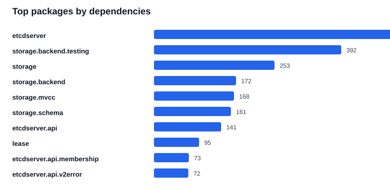
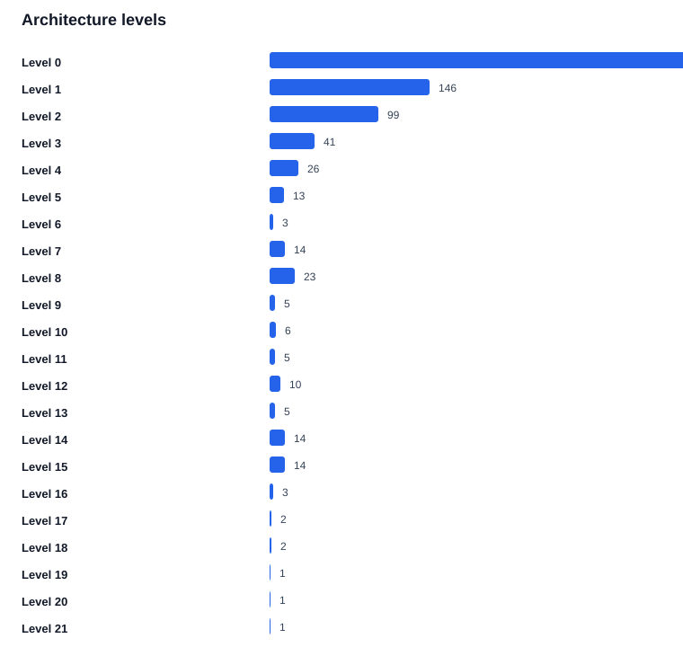
| Bucket | Packages |
|---|---|
| 0 | 2 |
| 1-2 | 23 |
| 3-5 | 14 |
| 6-10 | 6 |
| 11-25 | 9 |
| >25 | 12 |
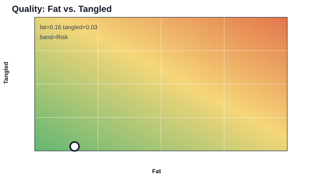
| Metric | Value |
|---|---|
| Band | Risk |
| Fat | 0.16 |
| Tangled | 0.03 |
| Classes | 763 |
| Internal dependencies | 1,205 |
| Dependencies inside class cycles | 40 |
| Layered violations | 56 |
| Package cycles | 1 |
| Class cycles | 10 |
| Component violations | 96 |
| Finding | Source scope | Target scope | Kind | Violations | Back edges | Score |
|---|---|---|---|---|---|---|
| package-violation-9 | etcdserver.api.v3rpc | etcdserver | UPWARD | 11 | 0 | 146 |
| package-violation-17 | storage.mvcc | lease | UPWARD | 9 | 0 | 123 |
| package-violation-10 | mock.mockstore | etcdserver.api.v2store | UPWARD | 8 | 0 | 104 |
| package-violation-8 | etcdserver.api.v3client | proxy.grpcproxy.adapter | UPWARD | 6 | 0 | 81 |
| package-violation-5 | etcdserver.api.rafthttp | etcdserver.api.rafthttp | UPWARD | 3 | 3 | 63 |
| package-violation-3 | etcdserver | etcdserver | UPWARD | 2 | 2 | 39 |
| package-violation-12 | storage | etcdserver.api.snap | UPWARD | 2 | 0 | 29 |
| package-violation-1 | embed | embed | UPWARD | 1 | 1 | 21 |
| package-violation-2 | etcdmain | etcdmain | UPWARD | 1 | 1 | 21 |
| package-violation-4 | etcdserver.api.membership | etcdserver.api.membership | UPWARD | 1 | 1 | 21 |
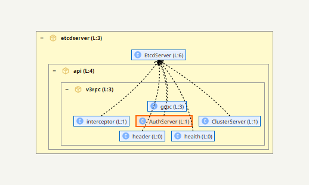
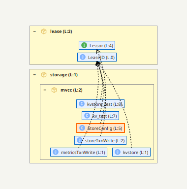
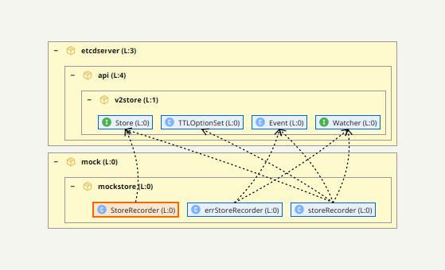
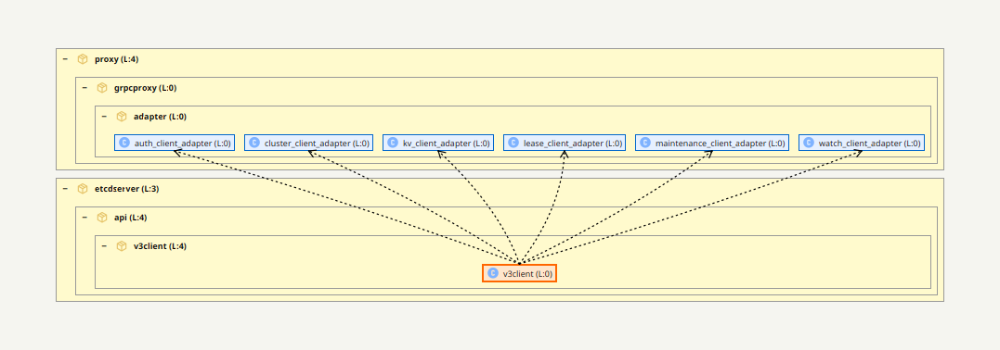
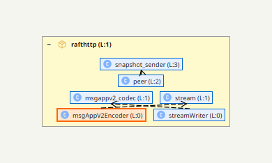
| Finding | Members | Internal edges | Method/weight | Score |
|---|---|---|---|---|
| package-cycle-1 | 2 | 2 | 46 | 76 |
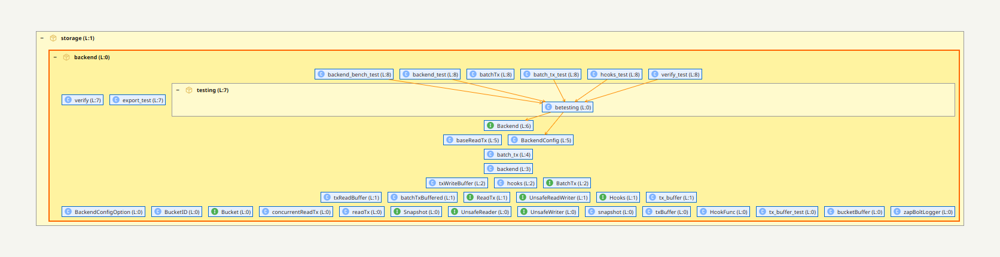
| Finding | Members | Internal edges | Method/weight | Score |
|---|---|---|---|---|
| class-cycle-12 | 5 | 8 | 11 | 101 |
| class-cycle-2 | 5 | 7 | 12 | 97 |
| class-cycle-11 | 4 | 4 | 4 | 64 |
| class-cycle-6 | 3 | 4 | 7 | 57 |
| class-cycle-5 | 2 | 3 | 8 | 43 |
| class-cycle-10 | 2 | 2 | 5 | 35 |
| class-cycle-8 | 2 | 2 | 3 | 33 |
| class-cycle-4 | 2 | 2 | 3 | 33 |
| class-cycle-1 | 2 | 2 | 2 | 32 |
| class-cycle-7 | 2 | 2 | 2 | 32 |
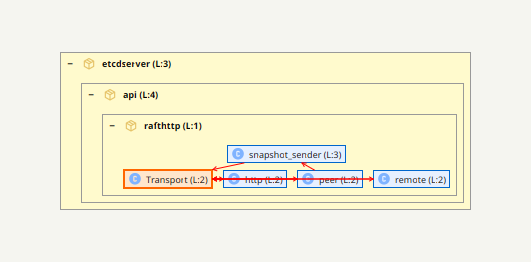
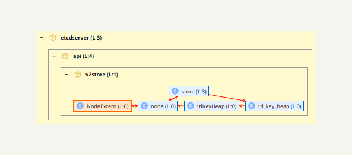
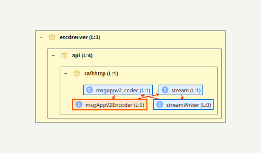
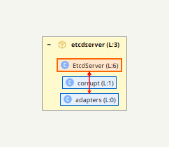
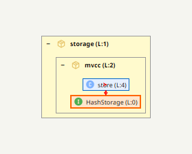
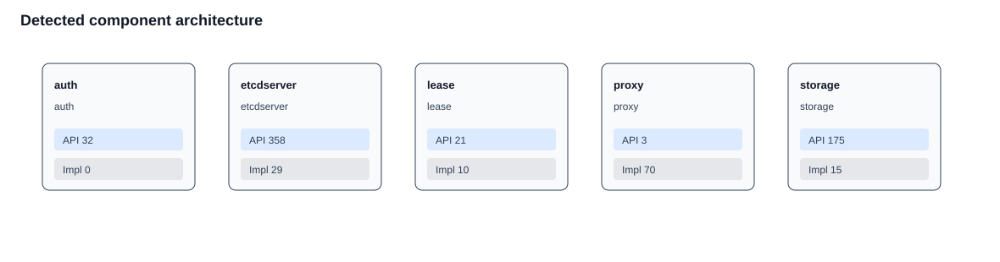
| Component | Root package | API classes | Implementation elements | Covered classes |
|---|---|---|---|---|
| auth | auth | 32 | 0 | 32 |
| etcdserver | etcdserver | 358 | 29 | 391 |
| lease | lease | 21 | 10 | 30 |
| proxy | proxy | 3 | 70 | 70 |
| storage | storage | 175 | 15 | 185 |
| Finding | Source scope | Target scope | Kind | Violations | Back edges | Score |
|---|---|---|---|---|---|---|
| component-violation-2 | etcdmain | proxy.grpcproxy | COMPONENT_API_BYPASS | 11 | 0 | 146 |
| component-violation-30 | storage.mvcc | storage.backend.testing | COMPONENT_API_LEAKS_IMPLEMENTATION | 10 | 0 | 133 |
| component-violation-31 | storage.schema | storage.backend.testing | COMPONENT_API_LEAKS_IMPLEMENTATION | 10 | 0 | 133 |
| component-violation-16 | etcdserver.apply | etcdserver.txn | COMPONENT_API_LEAKS_IMPLEMENTATION | 6 | 0 | 84 |
| component-violation-11 | etcdserver.api.v3client | proxy.grpcproxy.adapter | COMPONENT_API_LEAKS_IMPLEMENTATION | 6 | 0 | 81 |
| component-violation-12 | etcdserver.api.v3client | proxy.grpcproxy.adapter | COMPONENT_API_BYPASS | 6 | 0 | 81 |
| component-violation-35 | storage.wal | storage.wal.walpb | COMPONENT_API_LEAKS_IMPLEMENTATION | 5 | 0 | 71 |
| component-violation-29 | storage.backend | storage.backend.testing | COMPONENT_API_LEAKS_IMPLEMENTATION | 5 | 0 | 68 |
| component-violation-4 | etcdserver | etcdserver.txn | COMPONENT_API_LEAKS_IMPLEMENTATION | 3 | 0 | 42 |
| component-violation-13 | etcdserver.api.v3rpc | etcdserver.txn | COMPONENT_API_LEAKS_IMPLEMENTATION | 2 | 0 | 32 |
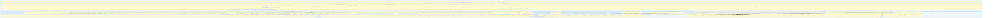
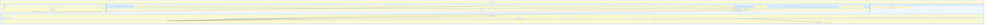
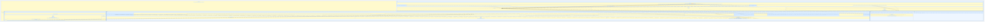
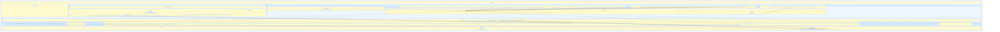
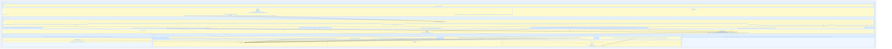
| Metric | Value |
|---|---|
| Districts | 57 |
| Buildings | 763 |
| Dependencies | 1205 |
| Max level | 21 |
| Invariant findings | 0 |
| Source | Target | Back edge |
|---|---|---|
| embed.serveCtx | embed.Etcd | true |
| etcdmain.main | etcdmain.etcd | true |
| etcdserver.adapters | etcdserver.EtcdServer | true |
| etcdserver.api.membership.membership_test | etcdserver.api.membership.cluster_test | true |
| etcdserver.api.rafthttp.msgAppV2Encoder | etcdserver.api.rafthttp.stream | true |
| etcdserver.api.rafthttp.peer | etcdserver.api.rafthttp.snapshot_sender | true |
| etcdserver.api.rafthttp.streamWriter | etcdserver.api.rafthttp.msgappv2_codec | true |
| etcdserver.api.v2store.node | etcdserver.api.v2store.store | true |
| etcdserver.api.v3client.v3client | etcdserver.EtcdServer | false |
| etcdserver.api.v3client.v3client | proxy.grpcproxy.adapter.auth_client_adapter | false |
| etcdserver.api.v3client.v3client | proxy.grpcproxy.adapter.cluster_client_adapter | false |
| etcdserver.api.v3client.v3client | proxy.grpcproxy.adapter.kv_client_adapter | false |
| etcdserver.api.v3client.v3client | proxy.grpcproxy.adapter.lease_client_adapter | false |
| etcdserver.api.v3client.v3client | proxy.grpcproxy.adapter.maintenance_client_adapter | false |
| etcdserver.api.v3client.v3client | proxy.grpcproxy.adapter.watch_client_adapter | false |
| etcdserver.api.v3rpc.AuthServer | etcdserver.EtcdServer | false |
| etcdserver.api.v3rpc.ClusterServer | etcdserver.EtcdServer | false |
| etcdserver.api.v3rpc.grpc | etcdserver.EtcdServer | false |
| etcdserver.api.v3rpc.header | etcdserver.EtcdServer | false |
| etcdserver.api.v3rpc.health | etcdserver.EtcdServer | false |
| etcdserver.api.v3rpc.interceptor | etcdserver.EtcdServer | false |
| etcdserver.api.v3rpc.key | etcdserver.EtcdServer | false |
| etcdserver.api.v3rpc.lease | etcdserver.EtcdServer | false |
| etcdserver.api.v3rpc.maintenance | etcdserver.EtcdServer | false |
| etcdserver.api.v3rpc.quota | etcdserver.EtcdServer | false |
| etcdserver.api.v3rpc.watch | etcdserver.EtcdServer | false |
| etcdserver.corrupt | etcdserver.EtcdServer | true |
| mock.mockstore.StoreRecorder | etcdserver.api.v2store.Store | false |
| mock.mockstore.errStoreRecorder | etcdserver.api.v2store.Event | false |
| mock.mockstore.errStoreRecorder | etcdserver.api.v2store.Watcher | false |
| mock.mockstore.storeRecorder | etcdserver.api.v2store.Event | false |
| mock.mockstore.storeRecorder | etcdserver.api.v2store.Store | false |
| mock.mockstore.storeRecorder | etcdserver.api.v2store.TTLOptionSet | false |
| mock.mockstore.storeRecorder | etcdserver.api.v2store.Watcher | false |
| mock.mockstore.store_recorder | etcdserver.api.v2store.Store | false |
| storage.BackendHooks | etcdserver.cindex.ConsistentIndexer | false |
| storage.Storage | etcdserver.api.snap.Snapshotter | false |
| storage.backend | config.ServerConfig | false |
| storage.backend | etcdserver.api.snap.Snapshotter | false |
| storage.backend | storage.BackendHooks | false |
| storage.backend | storage.schema.cindex | false |
| storage.mvcc.HashStorage | storage.mvcc.store | true |
| storage.mvcc.StoreConfig | lease.Lessor | false |
| storage.mvcc.kv_test | lease.LeaseID | false |
| storage.mvcc.kvstore | lease.LeaseID | false |
| storage.mvcc.kvstore_bench_test | etcdserver.cindex.ConsistentIndexer | false |
| storage.mvcc.kvstore_test | lease.LeaseID | false |
| storage.mvcc.metricsTxnWrite | lease.LeaseID | false |
| storage.mvcc.storeTxnWrite | lease.LeaseID | false |
| storage.mvcc.txnReadWrite | lease.LeaseID | false |